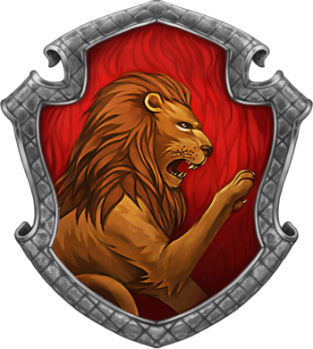
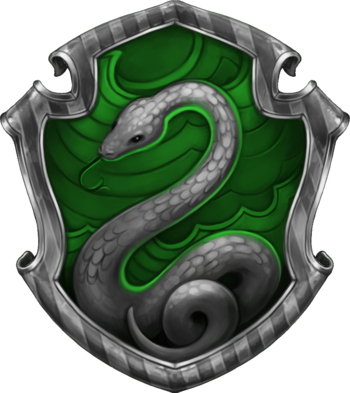
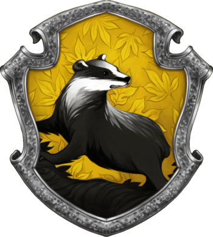
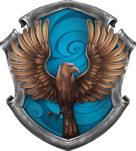

Grifinória
Grynffindor é uma das quatro Casas da Escola de Magia e Bruxaria de Hogwarts, fundada por Godrico Gryffindor . Ele instruiu o Chapéu Seletor a escolher alunos que possuíam as características que ele mais valorizava, como coragem, cavalheirismo e determinação, para serem classificados em sua casa. O animal emblemático é um Leão, e suas cores são vermelho e dourado. Sir Nicholas de Mimsy-Porpington, também conhecido como "Nick Quase sem Cabeça" é o fantasma da Casa.
Grifinória corresponde aproximadamente ao elemento Fogo, e é por esta razão que as cores escarlate e ouro foram escolhidas para representar a casa. A cor do fogo corresponde à de um leão também, com o vermelho representando a crina e a cauda e o amarelo representando a pelagem.
Sonserina
A Sonserina, fundada por Salazar Slytherin, é uma das quatro casas da Escola de Magia e Bruxaria de Hogwarts. Ao estabelecer a casa, Salazar instruiu o Chapéu Seletor a escolher somente alunos que obtivessem algumas de suas características particulares as quais ele prezava. Entre elas incluem a astúcia, desenvoltura, liderança e ambição. Vários membros da Sonserina possuem uma certa tendência em formar grupos, muitas vezes adquirindo líderes, o que exemplifica ainda mais as qualidades ambiciosas de Slytherin.
O fundador, de acordo com o próprio Chapéu Seletor, valorizava e favorecia estudantes de sangue puro. Entretanto, qualquer aluno que possui um status sanguíneo diferente, pode ser colocado na casa.
Seu animal emblemático é uma serpente e suas cores são verde e prata. Há dois diretores notáveis da Sonserina; Horácio Slughorn que assumiu o cargo duas vezes (primeiro se aposentou em 1981 e retornou como diretor em 1997 até pouco antes de 2016) e Severo Snape. O fantasma patrono da casa é o Barão Sangrento.
Lufa-Lufa
Lufa-Lufa é uma das quatro Casas da Escola de Magia e Bruxaria de Hogwarts. Sua fundadora foi Helga Hufflepuff. A casa é conhecida como a mais inclusiva entre as quatro, valorizando o trabalho árduo, a dedicação, a paciência, a lealdade e o jogo limpo, em vez de uma aptidão específica em seus membros. O animal emblemático é um texugo, e amarelo e preto são suas cores. A Diretora da Casa de Lufa-Lufa é Pomona Sprout. Frei Gorducho é o fantasma da Casa.
Os alunos pertencentes a esta casa são conhecidos por serem, amigáveis, leais, honestos e bastante parciais. Pode ser que, devido aos seus valores, os Lufalufanos não sejam tão competitivos quanto as outras casas e sejam mais modestos em relação às suas conquistas.
Corvinal
Corvinal é uma das quatro Casas da escola de magia e bruxaria de Hogwarts. Sua fundadora foi Rowena Ravenclaw. Os membros desta casa são caracterizados por sua inteligência, sagacidade, criatividade e sabedoria. O símbolo animal emblemático é uma Águia. As cores da casa são azul e bronze. O ultimo Diretor de Casa é Fílio Flitwick. O fantasma da casa é a Dama Cinzenta, também conhecida como a filha de Rowena Ravenclaw, Helena Ravenclaw.
A Casa da Corvinal premia o aprendizado, a sabedoria, a inteligência e a intelectualidade em seus membros. Assim, muitos Corvinos tendem a serem estudantes academicamente motivados e talentosos. Eles também se orgulham de serem originais em suas idéias e métodos. Não é incomum encontrar estudantes da Corvinal praticando tipos especialmente diferentes de magia que outras casas podem evitar. A Corvinal corresponde aproximadamente ao elemento Ar, e é por essa razão que as cores da Casa foram escolhidas.